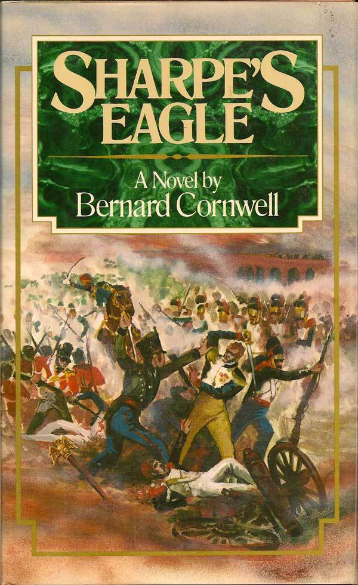
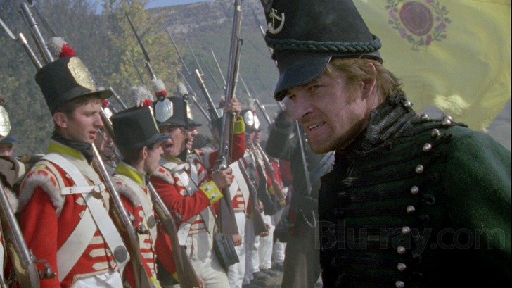

Sharpe's Eagle 중 - 탈라베라 전투 직전 상황
게시: 2018-03-07T20:51:30+09:00

Sharpe's Eagle by Bernard Cornwell (배경: 1809년 7월 27일 스페인 탈라베라) ----------
(웰슬리 휘하 영국군이 좌익, 쿠에스타 휘하 스페인군이 우익을 맡아 프랑스군과 탈라베라에서 대치합니다. 영국군 샤프 대위 일행이 언덕 위에서 그 모습을 내려다 봅니다.)
"저게 뭐야 ?"
3/4 마일 전방에서 프랑스군 용기병들이 기병총을 쏘아 대고 있었다. 샤프에게는 그들이 무엇에다 대고 쏘는지가 보이지 않았다. 그는 그저 총에서 나오는 연기와 희미한 총성을 지켜보고 있었다.
"용기병이요."
"나도 그건 알아." 호건 소령이 말했다. "뭐에다 대고 쏘냐는 거지 ?"
"글쎄, 뱀일까요 ?" 포르티나 강을 따라 걸어올라오면서, 샤프는 작고 검은 뱀들이 강 옆 짙은 수풀 속에서 또아리를 틀고 있는 것을 볼 수 있었다. 그는 뱀을 그냥 피해 걸었지만, 저 평원에도 뱀이 있을 수도 있고, 용기병들은 그냥 연습삼아 뱀을 표적으로 사격을 즐기고 있을 수도 있다고 생각했다. 때는 저녁이었고 기병총에서 나오는 섬광은 땅거미 속에서 밝게 반짝였다. 샤프 대위는 전쟁도 종종 예쁘게 보인다는 사실이 이상하다고 생각했다.
"어이," 하퍼 중사는 아래 쪽을 가리켰다. "쟤들이 우리의 용감한 연합군을 깨웠는데요. 꼭 개미집을 건드린 것 같아요."
방벽 아래에서, 스페인군 보병들이 흥분하고 있었다. 병사들은 모닥불 주변에서 일어나 호간 소령이 구축한 통나무로 된 방호벽에 머스켓 소총을 올려놓으며 줄지어 섰다. 장교들은 방호벽 위에 올라서서 칼을 뽑아들고 저 멀리 있는 용기병들을 가리켰다.
호간 소령은 웃었다. "연합군이 있다는 건 참 좋은 일이야."
프랑스군 용기병들은, 너무 멀어서 잘 보이지는 않았지만, 그들 나름대로의 과녁에 계속 총질을 해대고 있었다. 샤프는 그것이 그저 장난질을 해대고 있는 것이라고 생각했다. 프랑스군은 자신들이 스페인군에 난리법석을 일으켰다는 것을 전혀 모르고 있었다. 스페인군 보병들은 한명도 남김없이 모두 방호벽 뒤에 모여 모닥불을 뒤로 한채 총구를 텅빈 벌판으로 향했다. 장교들은 뭔가 명령을 소리쳤고, 수백정의 소총이 장전되기 시작했다. 샤프는 깜짝 놀랐다.
"저것들이 대체 뭐하자는 거야 ?" 수많은 장전봉이 수많은 총구 속으로 총알을 밀어넣으며 딸그락거리는 소리가 들려왔다. 장교들이 칼을 높이 들어올리는 것도 보였다. "보라고," 호간이 중얼거렸다. "한두가지 배울 점이 있을지도 모르쟎아 ?"
아무 명령도 아직 내려지지 않았다. 그러나 총성이 한방 울리면서, 총알 하나가 아무것도 없는 허허들판으로 날았다. 그러더니 샤프 대위가 여태까지 본 것 중 최대의 일제 사격이 뒤따랐다. 수천정의 머스켓 소총이 불꽃과 연기를 뿜으면서, 총성과 스페인군의 고함소리가 들려왔다.
화염과 납총알이 텅빈 들판을 휩쓸었다. 프랑스 용기병들은 흠칫 놀라서 시선을 이쪽으로 돌렸지만, 발사된 총알들은 용기병들이 있는 곳까지의 거리를 1/3도 날지 못하고 떨어졌다. 용기병들은 그냥 말 위에 앉아 머스켓 소총의 화약연기가 바람에 날려 흩어지는 것을 바라보고 있었다.
샤프는 한순간 스페인군이 무고한 들판을 상대로 거둔 자신들의 승리에 환호를 한다고 생각했다. 그러나 그 함성은 승리의 기쁨이 아니라 공포의 비명이라는 것을 깨닫는데 오래 걸리지는 않았다. 놀랍게도 스페인군은 자기 자신들의 1만 정이 일으킨 일제 사격 소리에 겁을 집어먹은 것이었다. 스페인군은 존재하지 않는 위협을 피해 거미새끼처럼 흩어졌다. 수천 명이 올리브 나무 사이로 쏟아져 나와 머스켓 소총을 내팽개치고 모닥불을 짓밟으며 요란법석과 함께 비명을 지르며 도망쳤다.
----------------------------------------------------------------------------------
믿어지지 않는 일이긴 합니다만, 이거 실제로 있었던 실화 거의 그대로입니다.
# 이거 실화냐
